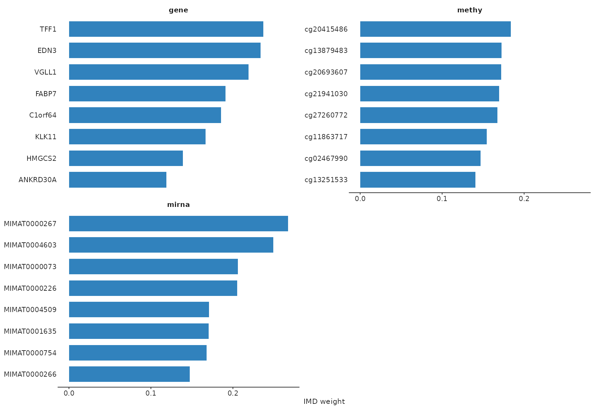
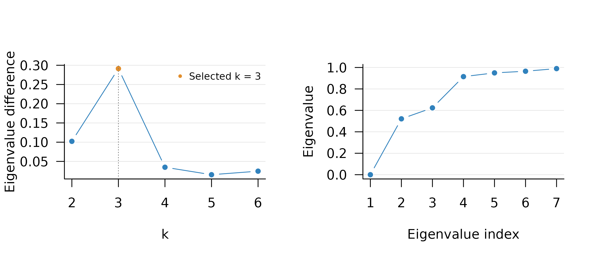
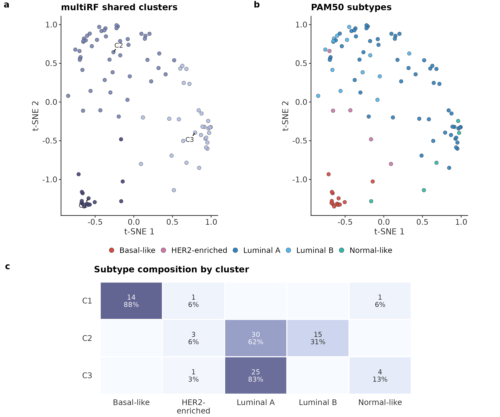

Using multiRF for Multi-Omics Integration
Wei Zhang
multiRF.RmdOverview
multiRF integrates matched multi-omics data with
directed multivariate random forests. The current workflow has four main
stages:
- fit one forest for each requested response–predictor block direction;
- construct and fuse sample-level forest weight matrices;
- separate shared from block-specific signal and cluster both components;
- optionally calculate inverse minimal depth (IMD), select variables, and refit a robust model.
The native C++ engine is the default. It implements multivariate
regression, unsupervised residual forests, all-sample and out-of-bag
forest weights, ordinary and enhanced proximity, weighted
candidate-variable sampling, and depth-based forest IMD. Parts of the
native engine, including its sampling and random-number-generation
routines, are adapted from randomForestSRC under GPL (>=
3). RF-SRC is also available as an optional fallback rather than a
requirement for the standard workflow.
This vignette uses a small deterministic subset of the bundled TCGA BRCA data so that every evaluated chunk runs quickly. For an analysis, use all eligible samples, a scientifically justified feature-filtering rule, and more trees (the workflow default is 500).
Input data
The input is a named list of numeric matrices or data frames. Samples are rows and features are columns. Every block must have:
- the same number of samples;
- identical, unique sample row names in the same order;
- unique feature names; and
- finite, non-constant numeric features.
Do not pass unordered blocks and rely on their row positions. Align them by sample identifier before fitting. Missing values and categorical predictors should be imputed or encoded explicitly before using the native numeric forest.
full_dimensions <- data.frame(
block = names(tcga_brca),
samples = unname(vapply(tcga_brca, nrow, integer(1))),
features = unname(vapply(tcga_brca, ncol, integer(1)))
)
knitr::kable(full_dimensions)| block | samples | features |
|---|---|---|
| gene | 674 | 200 |
| methy | 674 | 200 |
| mirna | 674 | 100 |
demo_n <- 100L
demo_p <- c(gene = 40L, methy = 40L, mirna = 30L)
demo_ids <- rownames(tcga_brca[[1L]])[seq_len(demo_n)]
brca_demo <- lapply(names(tcga_brca), function(block) {
x <- tcga_brca[[block]]
x[demo_ids, seq_len(min(demo_p[[block]], ncol(x))), drop = FALSE]
})
names(brca_demo) <- names(tcga_brca)
stopifnot(all(vapply(
brca_demo,
function(x) identical(rownames(x), demo_ids),
logical(1)
)))
knitr::kable(data.frame(
block = names(brca_demo),
samples = unname(vapply(brca_demo, nrow, integer(1))),
features = unname(vapply(brca_demo, ncol, integer(1)))
))| block | samples | features |
|---|---|---|
| gene | 100 | 40 |
| methy | 100 | 40 |
| mirna | 100 | 30 |
filter_mode = "auto" is the default and performs an
omics-aware dispersion prefilter before any forest is fitted. Here the
bundled matrices are already curated and then deliberately subset, so
the example uses filter_mode = "none". This input prefilter
is distinct from IMD-based variable selection later in the workflow.
A complete, fast example
mrf3() is the compact user-facing entry point. In this
example it fits all directed forests, constructs the shared and specific
components, calculates raw IMD, and applies the mixture selector without
a second forest fit.
fit <- mrf3(
dat.list = brca_demo,
k = NULL,
ntree = 40,
filter_mode = "none",
main_clustering = "similarity",
run_imd = TRUE,
run_variable_selection = TRUE,
variable_selection_args = list(
method = "mixture",
signal = "shared",
level = 0.05,
re_fit = FALSE
),
return_data = TRUE,
nthread = 1,
filter_verbose = FALSE,
verbose = FALSE,
seed = 529
)With k = NULL, cluster number is selected from the
learned representation without using the clinical annotations introduced
later. The mixture rule keeps this vignette fast. The adaptive OOB
filtering rule is described in Variable
selection.
summary(fit)
#> mrf3_fit Summary
#> ----------------
#> Blocks : 3
#> Block names : gene, methy, mirna
#> Samples : 100
#> Models : 6
#> Connections : 6
#>
#> Top-v: model=45, fused=55
#>
#> Branches
#> - shared: ran (computed shared weights and shared clustering)
#> - specific: ran (specific=Spectral)
#> - imd: ran (net=0)
#> - cluster_imd: skipped (skipped)
#> - variable_selection: ran (method=mixture, p_selected=6/15/7)
#> - robust_clustering: skipped (skipped)
#>
#> Shared Fraction (top blocks)
#> data shared_frac specific_ratio method
#> methy 0.285 0.715 signal_frobenius
#> gene 0.273 0.727 signal_frobenius
#> mirna 0.245 0.755 signal_frobenius
fit_overview <- data.frame(
quantity = c(
"directed forests", "model top-v", "fused top-v",
"shared clusters", "selected variables"
),
value = c(
length(get_models(fit)),
fit$model_top_v,
if (is.null(fit$fused_top_v)) "none" else fit$fused_top_v,
length(unique(get_clusters(fit))),
sum(vapply(get_selected_vars(fit), length, integer(1)))
)
)
knitr::kable(fit_overview)| quantity | value |
|---|---|
| directed forests | 6 |
| model top-v | 45 |
| fused top-v | 55 |
| shared clusters | 3 |
| selected variables | 28 |
The most useful accessors avoid depending on the internal list layout:
head(get_clusters(fit))
#> [1] 1 2 2 2 2 2
table(shared_cluster = get_clusters(fit))
#> shared_cluster
#> 1 2 3
#> 17 48 35
specific_cluster_counts <- vapply(
names(brca_demo),
function(block) length(unique(get_clusters(fit, block = block))),
integer(1)
)
specific_cluster_counts
#> gene methy mirna
#> 3 2 2
get_top_vars(fit, n = 5)
#> $gene
#> variable weight
#> 1 TFF1 0.2368899
#> 2 EDN3 0.2335565
#> 3 VGLL1 0.2190179
#> 4 FABP7 0.1910020
#> 5 C1orf64 0.1853795
#>
#> $methy
#> variable weight
#> 1 cg20415486 0.1838194
#> 2 cg13879483 0.1725670
#> 3 cg20693607 0.1719866
#> 4 cg21941030 0.1695833
#> 5 cg27260772 0.1672297
#>
#> $mirna
#> variable weight
#> 1 MIMAT0000267 0.2674107
#> 2 MIMAT0004603 0.2493576
#> 3 MIMAT0000073 0.2059003
#> 4 MIMAT0000226 0.2052778
#> 5 MIMAT0004509 0.1708929
get_vs_summary(fit)
#> block p_total p_selected selected_ratio
#> 1 gene 40 6 0.1500000
#> 2 methy 40 15 0.3750000
#> 3 mirna 30 7 0.2333333Other commonly used accessors are get_models(),
get_connection(), get_weights(),
get_selected_vars(), and get_data(). Use
get_clusters(fit, block = "gene") for a block-specific
partition and get_clusters(fit, which = "robust") after
running the robust branch.
Directed forests and connections
A connection is stored as c(response, predictor): the
second block supplies the split variables and the first supplies the
multivariate responses. With three blocks, the default retains all six
directed pairwise forests.
connections <- get_connection(fit)
connection_table <- do.call(rbind, lapply(connections, function(x) {
data.frame(response = x[[1L]], predictor = x[[2L]])
}))
rownames(connection_table) <- NULL
knitr::kable(connection_table)| response | predictor |
|---|---|
| gene | methy |
| gene | mirna |
| methy | gene |
| methy | mirna |
| mirna | gene |
| mirna | methy |
Set select_connection = TRUE only when direction
screening is intentionally part of the analysis. Otherwise all directed
models are retained and their connection scores enter the fusion
weights.
For the native multivariate-regression forests, important workflow defaults are:
| Setting | Default | Meaning |
|---|---|---|
ntree |
500 in mrf3()
|
Trees per directed forest |
samptype |
"swor" |
Approximately 63.2% of samples without replacement |
mtry |
ceiling(p / 3) |
Candidate predictor variables per split |
ytry |
ceiling(q / 3) |
Candidate response variables per split |
nsplit |
10 | Random populated cut points per candidate variable; use 0 to scan all |
nodesize |
5 | Regression terminal-node size setting |
forest.wt |
"all" |
All-sample weights for reconstruction |
seed |
529 | Positive, reproducible seed |
At each node, candidate responses are standardized within that node
before their component split statistics are combined. The response with
the largest component statistic is stored as the multivariate splitting
response variable (MSRV). IMD, however, is a forest-level depth measure:
for each tree it uses 1 / (minimum split depth + 1) and
then averages across trees.
Forest-weight fusion and shared/specific signal
For each directed model, the workflow starts from its sample-by-sample forest weight matrix. The default similarity path then:
- removes self weights;
- applies model-level top-v truncation and row normalization;
- normalizes connection scores within each response block;
- averages the response-level matrices uniformly; and
- optionally applies fused top-v truncation and row normalization.
The corresponding operations are written explicitly below. Let be the raw forest-weight matrix for directed model , let retain the top- entries in each row (including ties at the cutoff), and let denote row normalization. Model-level preprocessing is
For response block , define . If is the connection score, the within-response weights and fused matrix are
The default global fusion then averages the response-level matrices before the optional fused top- step:
Thus, model-level preprocessing
feeds within-response fusion,
followed by across-response
fusion. Weighted fusion uses the connection modularity by default,
with
and
;
if all scores in a response block are invalid or non-positive, the
default fallback is uniform weighting. A tuned or fixed top-v at least
80% of the sample size is interpreted as no truncation.
model_top_v = Inf and fused_top_v = Inf also
request no truncation explicitly; without fused truncation,
in the across-response formula is the identity.
The shared and residual-specific affinities are constructed as
S = W %*% t(W), with the diagonal set to zero. Spectral
clustering is the default similarity backend.
W <- fit$reconstruction$W$W_all
S_shared <- fit$shared$clustering$similarity
c(
minimum_weight_row_sum = min(rowSums(W)),
maximum_weight_row_sum = max(rowSums(W)),
maximum_similarity_diagonal = max(abs(diag(S_shared)))
)
#> minimum_weight_row_sum maximum_weight_row_sum maximum_similarity_diagonal
#> 1 1 0
fit$shared$frac[, c("data", "shared_frac", "specific_ratio")]
#> data shared_frac specific_ratio
#> 1 gene 0.2726395 0.7273605
#> 2 methy 0.2849687 0.7150313
#> 3 mirna 0.2447749 0.7552251For block k, the response-specific forest weight
matrix gives the shared reconstruction
Xhat^(k) = W^(k) X^(k) and the residual
R^(k) = X^(k) - Xhat^(k). An unsupervised forest is then
fitted to each residual matrix to obtain its block-specific weight
matrix and similarity. The reported shared_frac is
1 - ||R^(k)||_F^2 / ||X^(k)||_F^2. It is a descriptive
signal fraction, not a hypothesis-test p-value.
Variable selection
Set run_imd = TRUE when global raw IMD should be
retained without running a selection branch.
run_variable_selection = TRUE and
run_robust_clustering = TRUE compute the required IMD
automatically. The three IMD selection methods all operate on the
unnormalized [0, 1] scale:
| Method | Selection rule | When to use it |
|---|---|---|
"filter" |
Select above tau * sd(IMD); tune
tau with true OOB normalized MSE across predictor and
response coordinates |
Adaptive OOB rule; most computationally intensive |
"transformation"
("test") |
Standardize each feature’s forest IMD relative to the
block-wide IMD distribution; retain upper-tail features at the chosen
level, combined by majority vote across connected
forests |
Distribution-normalized screening |
"mixture" |
Explicit point mass at zero plus two components on positive IMD | Posterior noise-probability selection |
method = "thres" is also available when a fixed
se * sd(IMD) cutoff is needed.
normalized = FALSE is the default because selection is
performed on raw IMD. If re_weights = TRUE, the retained
raw IMD values are used as native candidate-variable sampling weights
during refitting.
The evaluated example used the mixture rule:
get_vs_summary(fit)
#> block p_total p_selected selected_ratio
#> 1 gene 40 6 0.1500000
#> 2 methy 40 15 0.3750000
#> 3 mirna 30 7 0.2333333
lapply(get_selected_vars(fit), utils::head)
#> $gene
#> [1] "FABP7" "KLK11" "EDN3" "TFF1" "VGLL1" "C1orf64"
#>
#> $methy
#> [1] "cg27260772" "cg01893212" "cg13251533" "cg20399616" "cg08435683" "cg23179456"
#>
#> $mirna
#> [1] "MIMAT0000226" "MIMAT0001635" "MIMAT0000267" "MIMAT0004603" "MIMAT0000073"
#> [6] "MIMAT0000754"Plots from an mrf3_fit object use the unified
plot(fit, type = ...) interface. Recommended types are
"tsne", "umap", "network",
"circos", "composition", "km",
and "weights"; additional arguments are forwarded to the
corresponding plot implementation.
IMD values can be inspected independently of the selected set:
plot(fit, type = "weights", weight_source = "imd", top = 8)
For the adaptive OOB filter, use:
vs_filter <- mrf3_vs(
mod = fit,
method = "filter",
signal = "shared",
k = 3,
tol = 0.01,
re_fit = FALSE
)
get_selected_vars(vs_filter)The adaptive OOB filter is defined for shared IMD. With
signal = "all", the workflow uses adaptive filtering for
shared IMD and the fixed cutoff for residual-specific IMD, then returns
their union. The transformation and mixture methods can be applied
directly to signal = "shared", "specific", or
"all".
vs_transformation <- mrf3_vs(
fit, method = "transformation", signal = "shared",
level = 0.05, re_fit = FALSE
)
vs_union <- mrf3_vs(
fit, method = "mixture", signal = "all",
level = 0.05, re_fit = FALSE
)Standalone mrf3_vs() defaults to
re_fit = TRUE. The staged workflow does not refit unless
requested, except that run_robust_clustering = TRUE must
and therefore does force a final refit.
Clustering modes and PAM50 annotation
The main_clustering argument applies the same
representation choice to the shared and specific branches:
| Mode | Representation | Default clustering backend |
|---|---|---|
"similarity" |
W W^T from fused or residual weights |
Spectral |
"proximity" |
Same-terminal-node frequency | PAM |
"enhanced_proximity" |
Proximity plus sibling-leaf correction | PAM |
The evaluated fit selected three shared clusters by the eigengap of
its learned similarity. The diagnostic below repeats that calculation
over k = 2, ..., 6. It is retrospective to the fit and does
not use PAM50 or any other clinical annotation.
k_diagnostic <- tune_k_clusters(
S_shared,
method = "Spectral",
k_tune = 2:6,
return_cluster = TRUE,
plot_k = TRUE
)
stopifnot(k_diagnostic$best_k == length(unique(get_clusters(fit))))Post hoc comparison with PAM50
PAM50 is used here only after fitting to annotate the unsupervised shared partition. It was not supplied to feature selection, forest construction, weight fusion, cluster-number tuning, or clustering. Because PAM50 itself is derived from gene expression and gene expression is one of the multiRF input blocks, this is a biological concordance check rather than an independent ground truth.
All 94 primary tumors in the demonstration subset had a PAM50 call.
The remaining 6 adjacent-normal samples had no tumor-subtype label and
are excluded from this comparison. The same native t-SNE coordinates are
used in panels a and b; only the coloring changes. Panels a and b use
plot(..., type = "tsne"), and panel c uses
plot(..., type = "composition") to show the exact
within-cluster composition. All three panels use the unified plotting
interface; the assembly code is hidden here to keep the vignette
concise.

Relationship between the multiRF shared partition and PAM50 annotations in the demonstration subset. (a, b) The same native t-SNE embedding of the learned shared similarity for 94 primary tumors, colored by multiRF cluster (a) or PAM50 annotation (b). t-SNE is used only for visualization. (c) Within-cluster PAM50 composition; labels show sample count and row percentage.
The three-cluster partition captures a coarse organization of PAM50-related biology rather than a one-to-one recovery of five subtypes: C1 is almost entirely Basal-like, whereas C2 and C3 divide the luminal-rich samples. The agreement metrics are reported below. Fixing five clusters on the same learned similarity is included only as a sensitivity analysis and does not improve agreement.
knitr::kable(pam50_metrics, digits = 3)| resolution | n | ari | jaccard | nmi | purity |
|---|---|---|---|---|---|
| Unsupervised k = 3 | 94 | 0.275 | 0.385 | 0.480 | 0.734 |
| Fixed k = 5 sensitivity | 94 | 0.204 | 0.279 | 0.409 | 0.734 |
The similarity workflow is the default. To compare representations on a full analysis, keep the data, tree settings, and positive seed fixed:
fit_similarity <- mrf3(
dat.list, k = 4, ntree = 500,
main_clustering = "similarity", seed = 529
)
fit_proximity <- mrf3(
dat.list, k = 4, ntree = 500,
main_clustering = "proximity", seed = 529
)
fit_enhanced <- mrf3(
dat.list, k = 4, ntree = 500,
main_clustering = "enhanced_proximity", seed = 529
)If k = NULL, cluster number is tuned in the downstream
clustering stage, as in the evaluated fit. For a fixed biological
hypothesis, supply k explicitly.
tune_k_clusters() draws its diagnostic on the active
graphics device and restores the prior base-graphics settings
afterward.
The ggplot objects returned by the unified interface can be composed
or exported at final figure size. For example,
ggplot2::ggsave("shared-tsne.pdf", width = 85, height = 75, units = "mm")
writes a vector figure; use TIFF or PNG at 600 dpi when a raster file is
required. The default sans family is portable across R
devices.
Robust and cluster-specific analyses
Robust clustering repeats reconstruction after feature selection. It is an optional, more expensive branch:
fit_robust <- mrf3(
dat.list,
k = 4,
ntree = 500,
run_imd = TRUE,
run_variable_selection = TRUE,
run_robust_clustering = TRUE,
variable_selection_args = list(
method = "filter",
re_weights = TRUE
),
seed = 529
)
table(get_clusters(fit_robust, which = "robust")$shared)Cluster-specific IMD is separate from global IMD and must be requested explicitly:
fit_cluster_imd <- mrf3(
dat.list,
k = 4,
ntree = 500,
run_imd = TRUE,
run_cluster_imd = TRUE,
cluster_imd_args = list(min_cluster_size = 15),
seed = 529
)
get_weights(fit_cluster_imd$cluster_imd, cluster = 1)Reproducibility and resource use
- Use a non-negative integer
seedfor a reproducible native fit; 529 is the package default. A negative seed deliberately requests system entropy. Reproducible seeds give the same result across thread counts. - Set
options(multiRF.nthread = n)or passnthread = nto control native parallel tree construction. - Keep
samptype = "swor"for the default workflow. Sampling with replacement is supported when it is scientifically intended. - Forest weights and proximity matrices are
nbyn. For large cohorts, account for these matrices when choosing worker counts. -
compact_output = TRUEreduces retained duplicate objects, but do not use it when models will be needed for later custom reconstruction or reclustering. - Record
packageVersion("multiRF"), the random seed, connections, tree settings, selected top-v values, and clustering arguments with every result.
For a production fit without automatic input prefiltering:
options(multiRF.engine = "native", multiRF.nthread = 4L)
fit_final <- mrf3_fit(
dat.list = dat.list,
ntree = 500,
samptype = "swor",
filter_mode = "none",
main_clustering = "similarity",
clustering_args = list(shared_k = 4, specific_k = 2),
top_v_method = "entropy_elbow",
select_connection = FALSE,
run_imd = TRUE,
run_variable_selection = TRUE,
variable_selection_args = list(
method = "filter",
signal = "shared",
k = 3,
re_fit = FALSE
),
return_data = TRUE,
seed = 529
)Common problems
Rows are silently mismatched. They should not be: current validation stops on unequal or reordered sample identifiers. Align every block explicitly.
A constant feature becomes non-finite after scaling. Remove constant and non-finite columns before fitting, or use an appropriate filtering mode.
mrf3_vs() cannot find data. Supply
dat.list directly or fit with
return_data = TRUE.
A response block is absent from reconstruction. Per-response fusion requires at least one fitted response-side connection for every input block; the workflow now stops rather than substituting a global matrix.
Block names contain underscores. Current fits retain
explicit response and predictor metadata, so underscores are supported.
Avoid parsing model display names in downstream code; use
get_connection().
Citation
If you use multiRF, please cite the method relevant to
your analysis:
Zhang, W., Wang, L., Franzmann, E. J., and Chen, X. S. (2026). Multivariate Random Forests for Cross-Modal Multi-Omics Integration. bioRxiv. doi:10.64898/2026.06.17.732933
Zhang, W. et al. (2025). An integrative multi-omics random forest framework for robust biomarker discovery. GigaScience, 14, giaf148. doi:10.1093/gigascience/giaf148
The native forest engine and optional fallback build on
randomForestSRC; please also cite:
Ishwaran, H., and Kogalur, U. B. (2026). randomForestSRC: Fast Unified Random Forests for Survival, Regression, and Classification (RF-SRC). R package version 3.6.2. doi:10.32614/CRAN.package.randomForestSRC
Ishwaran, H., and Kogalur, U. B. (2007). Random survival forests for R. R News, 7(2), 25–31. Article
Session information
packageVersion("multiRF")
#> [1] '0.2.3'
sessionInfo()
#> R version 4.6.1 (2026-06-24)
#> Platform: x86_64-pc-linux-gnu
#> Running under: Ubuntu 24.04.4 LTS
#>
#> Matrix products: default
#> BLAS: /usr/lib/x86_64-linux-gnu/openblas-pthread/libblas.so.3
#> LAPACK: /usr/lib/x86_64-linux-gnu/openblas-pthread/libopenblasp-r0.3.26.so; LAPACK version 3.12.0
#>
#> locale:
#> [1] LC_CTYPE=C.UTF-8 LC_NUMERIC=C LC_TIME=C.UTF-8
#> [4] LC_COLLATE=C.UTF-8 LC_MONETARY=C.UTF-8 LC_MESSAGES=C.UTF-8
#> [7] LC_PAPER=C.UTF-8 LC_NAME=C LC_ADDRESS=C
#> [10] LC_TELEPHONE=C LC_MEASUREMENT=C.UTF-8 LC_IDENTIFICATION=C
#>
#> time zone: UTC
#> tzcode source: system (glibc)
#>
#> attached base packages:
#> [1] stats graphics grDevices utils datasets methods base
#>
#> other attached packages:
#> [1] multiRF_0.2.3
#>
#> loaded via a namespace (and not attached):
#> [1] tidyr_1.3.2 sass_0.4.10 generics_0.1.4 rstatix_1.1.0
#> [5] digest_0.6.39 magrittr_2.0.5 evaluate_1.0.5 grid_4.6.1
#> [9] RColorBrewer_1.1-3 iterators_1.0.14 fastmap_1.2.0 foreach_1.5.2
#> [13] jsonlite_2.0.0 ggrepel_0.9.8 backports_1.5.1 Formula_1.2-6
#> [17] purrr_1.2.2 scales_1.4.0 codetools_0.2-20 textshaping_1.0.5
#> [21] jquerylib_0.1.4 abind_1.4-8 cli_3.6.6 rlang_1.3.0
#> [25] cowplot_1.2.0 withr_3.0.3 cachem_1.1.0 yaml_2.3.12
#> [29] otel_0.2.0 tools_4.6.1 parallel_4.6.1 ggsignif_0.6.4
#> [33] dplyr_1.2.1 ggplot2_4.0.3 ggpubr_1.0.0 broom_1.0.13
#> [37] vctrs_0.7.3 R6_2.6.1 lifecycle_1.0.5 car_3.1-5
#> [41] fs_2.1.0 htmlwidgets_1.6.4 ragg_1.5.2 cluster_2.1.8.2
#> [45] pkgconfig_2.0.3 desc_1.4.3 pkgdown_2.2.1 pillar_1.11.1
#> [49] bslib_0.12.0 gtable_0.3.6 glue_1.8.1 Rcpp_1.1.2
#> [53] systemfonts_1.3.2 xfun_0.60 tibble_3.3.1 tidyselect_1.2.1
#> [57] knitr_1.51 farver_2.1.2 htmltools_0.5.9 igraph_2.3.3
#> [61] carData_3.0-6 rmarkdown_2.31 labeling_0.4.3 compiler_4.6.1
#> [65] S7_0.2.2